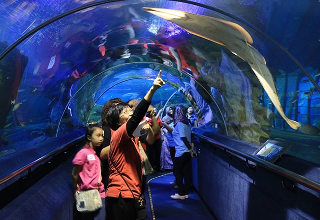
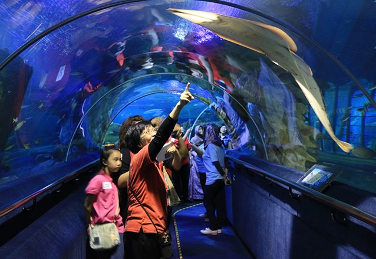

MALAYSIA TRAVELOG
POPULAR DESTINATION!
KUALA LUMPUR
AQUARIA KLCC
 

Aquaria KLCC, located on the concourse level of the Kuala Lumpur Convention Centre, is said to be one of the largest aquariums in Southeast Asia. Home to over 150 species of marine life, its star attractions include scary tiger sharks, lethal sea snakes, blue rays, bright coral fish, seahorses and more.
It’s a well-stocked aquarium just begging to be explored, and after a few hours here you'll have seen over 5,000 freshwater and marine creatures, including massive arapaimas, giant groupers, gar fish and more. Some people write it off as a tourist trap, but they’re sorely missing out – beyond the big tanks, with gallons of water, filled with necklaces of kelp, coral and mysterious and sometimes menacing sea creatures, is one of the country’s foremost sightseeing attractions with real depth and complexity.Well worth exploring, Kuala Lumpur Aquarium doesn’t just ‘submerge’ visitors beneath thousands of gallons of seawater – instead the venue is laid out to take visitors through different watery landscapes, from the highlands and flooded jungles of Malaysia, to the Amazon basin, coral reefs and the open ocean. Your journey isn’t a linear one – start off on Level 1 where you’ll see piranhas make quick work of their meal as well as electric eels, elephantnose fish and electric catfish. Also in this section, visitors can check out the DNA Touch Pool where they can pick up and feel the texture of live corals and star fish
One of the highlights of Aquaria KLCC is a giant tank (featuring an authentic-looking shipwreck) – a 90m walk-through tunnel with a moving travelator in its centre. Inside you’ll be surrounded by sand tiger sharks, huge stingrays and more. You can take a break from looking at Nemo and his crew, as you head to The Stream which plays host to the giant water rat and the adorable Asian small-clawed otter. Meanwhile, the Jewels of the Jungle section is home to a variety of reptiles, amphibians and insects including the green snake, coatimundi, tarantula and many others; also be sure to check out the exhibit showcasing the life cycle of butterflies.
Opening Hours: Daily 10:00 - 20:00
MRT: KLCC
Address: Kuala Lumpur Convention Centre Complex, Kuala Lumpur City Centre
Tel: +603 2333 1888
PETROSAINS
Petrosains Sdn Bhd is a wholly owned subsidiary of PETRONAS, Malaysia’s fully integrated oil and gas multinational corporation, that leads and steers the business and visit operations of two distinctive institutions in the nation, Petrosains, The Discovery Centre and the world renowned PETRONAS Twin Towers.
Interactive, experiential, and hands-on, Petrosains, The Discovery Centre is everything a science centre should be. With exhibits, in-reach and outreach activities that make learning STEM (science, technology, engineering and mathematics) fun, Petrosains is an extension of PETRONAS’ commitment to nation-building by nurturing the interest in STEM and driving the creation of a new generation of science and technology-minded, innovation-inspired Malaysians.
Address Petrosains, The Discovery Centre PETRONAS Twin Towers Level 4, Suria KLCC, 50088 Kuala Lumpur.
Telephone. +603 2331 8181.
Website. http://www.petrosains.com.my/
ZOO NEGARA MALAYSIA
Zoo Negara is home to 5137 animals of 476 different species.Over the years, the zoo has transformed itself to an open concept zoo with over 90% of its animals kept in spacious exhibits with landscape befitting its nature. Zoo Negara received MS ISO 9001:2008 certification in July 2007, and is a member of the South East Asian Zoos Association (SEAZA). The President and chairman of the zoo is Y. Bhg. Dato' Ismail Hutson.
Open daily from 9am to 5pm. Last admission at 4pm. The zoo is wheel-chair friendly. Guests with special needs should proceed to Information Counter B beside the ticket counter to seek assistance from the guest service ambassadors.
Admission Fees
- Malaysian: Adult RM45.00 Children RM18.
- Foreigner: Adult RM61 for ASEAN nationals. RM82 for others. Children: RM33 for ASEAN nationals, RM43 for others.
- School Concession Rate: RM13.00 Student, RM17.00 per head for Teacher with min 10 students
- OKU / Disabled person with Certificate: Free